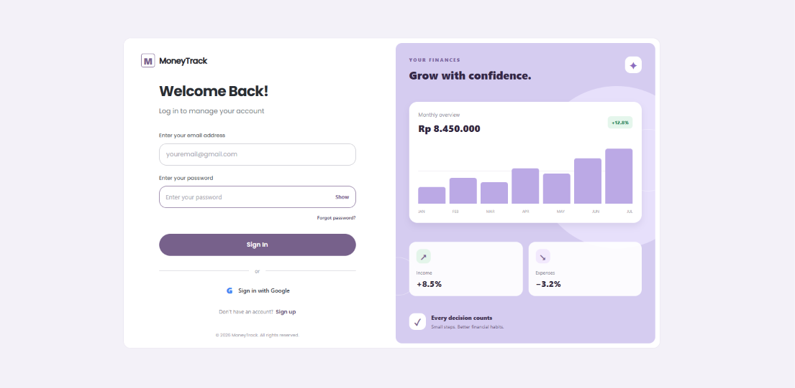
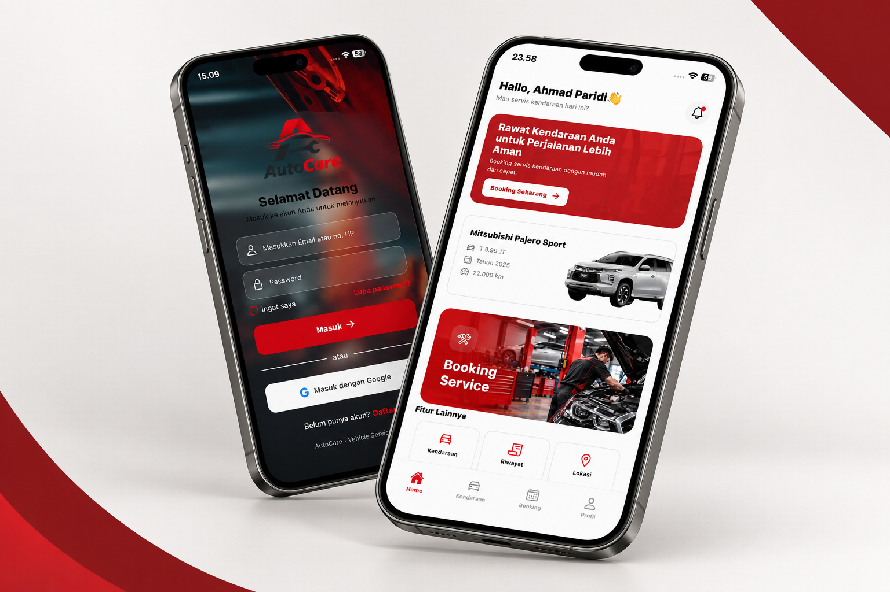
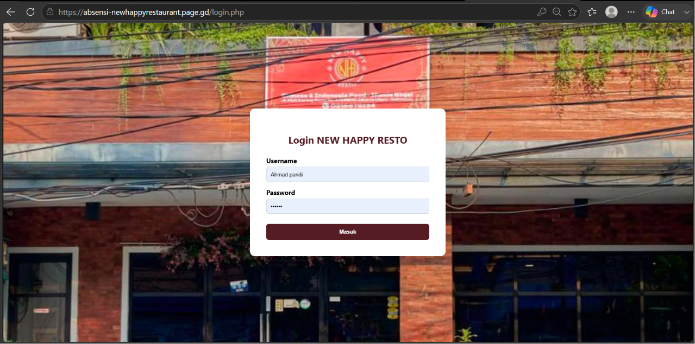
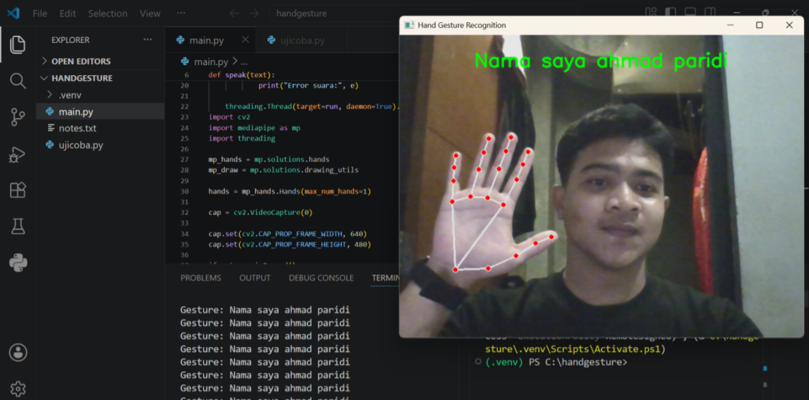

💰 MoneyTrack
Aplikasi manajemen keuangan berbasis web untuk mencatat pemasukan, pengeluaran, kategori transaksi, memantau saldo harian, serta menyajikan dashboard visual dan laporan analitik.

🚗 AutoCare
Aplikasi pemesanan servis kendaraan mobile yang memudahkan pengguna mengelola data kendaraan, booking servis bengkel berkala, dan memantau status servis secara real-time.

📚 BacaRuang
Aplikasi perpustakaan digital untuk menjelajahi katalog buku, melihat detail & sinopsis, membaca buku secara digital, serta mengelola rak koleksi bacaan favorit pengguna.

📋 Employee Attendance
Sistem absensi karyawan berbasis web dengan dashboard interaktif, manajemen data pegawai, pemantauan kehadiran harian, dan penyusunan laporan rekapitulasi presensi otomatis.

🤖 Hand Gesture Recognition
Aplikasi Computer Vision berbasis Python yang mendeteksi gerakan tangan dan jari secara real-time via webcam dengan MediaPipe dan OpenCV, dilengkapi Text-to-Speech (TTS) untuk konversi gesture menjadi suara.